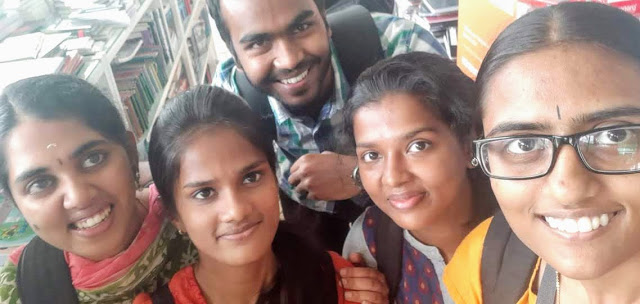
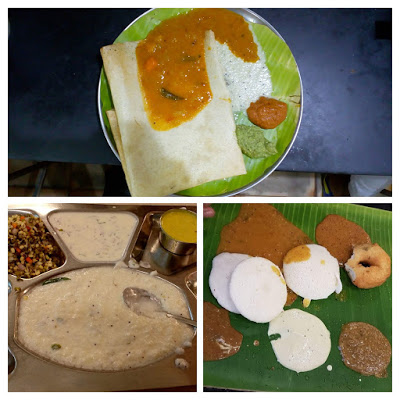

I got into the brawl with Annas, witnessed the huge Rajnikant fan-following, made Tamil friends, played beach volleyball, learnt to make perfect dosas, dipped in the Bay of Bengal, savoured the sunrise, and what not.
Every city has its soul. Madras has it's too which happens to run on dosas, idlis, sambhars and rasams.On every nook, every corner you can see these dosa-stalls serving on the banana leaves. I don't think you can get a real flavour of a city by spending a day or two in the city by sightseeing. When you really want to pick the beat of a city, pack your bag a leave for the place for at least a month.
Every city has its soul. Madras has it's too which happens to run on dosas, idlis, sambhars and rasams.On every nook, every corner you can see these dosa-stalls serving on the banana leaves. I don't think you can get a real flavour of a city by spending a day or two in the city by sightseeing. When you really want to pick the beat of a city, pack your bag a leave for the place for at least a month.
Annas and Akaas!That's what you call people here. Everyone is Anna here. You can see Akaas furiously flaunting the buzz-cut look when all of India considers a buzz-cut ungracious for women. Fashion statements!! Maybe, Tirumala is the main reason for that buzz-cut look. Well, Tirumala is the holy pilgrimage that devotees take with a complementary donation of their hair to Lord Krishna. That has some 3350 steep steps with a total of 11 km walk through a forest and up the mountain, barefoot!I did take that and even made it to the top. You can witness that tremendous fervour of the devotees chanting "Govinda, Govinda". all making their way up. Amidst the heat, the sweat and the crowd as well. The chanting becomes more intense as the journey proceeds. Finally, after making way up to the top and undergoing through the labyrinth of paths and multiple queues you actually witness blink-an-eye-and-you-miss moment(due to the huge crowd) with the actual idol inside the temple premises.
Tirupati is a holy city. The city runs on the donation of the devotees and offerings made by the pilgrims. You can see people sitting and eating on the mat on side of the road. It's a very humbling place. Initially, I got irritated because of the crowd but those moments would always be revered.
"The more you know, the more you know how much you don't know"-Aristotle
So, I was an intern at Imsc(Indian Institute of Mathematical Science) at Chennai. There is a beauty in the centres of learning, be it anywhere. That intimidating vast ocean of knowledge lying front and you being a tiny droplet. People discussing maths over a coffee.I made some amazing friend there.They were warm and quite welcoming.
 Some awesome people I metI would never forget the roaring sound that the oceanic waves make before finally hitting the shore as if teasing humans of its invincibility. And sunrise is always good for your soul. Well, if you ever come to Chennai take a ride to Pondicherry via ECR.ECR is the east most highway of the country. Let the oceanic misty breeze play with the hair and let the scenic backwaters envision and suffuse you with serenity. And what to say about the sun-kissed golden beaches of Pondicherry(aka Paris Of the East). Do play a beach volleyball there.
Coming to the city I tried almost all the south Indian cuisine. But the idlis have a special place. That softness which dissolves in the mouth as soon as you bite a piece off is inexplicable. You can't witness the same softness anywhere in the North-India.
I must talk about the skin colour. I consider a woman with wheatish-brown skin to be the sexiest colour she can possess. It is a sign of healthy skin and ages slowly too. Plus you don't have to get tanned. Most of the people here are of that complexion including me.No wonder people mistook me for a South-Indian. And it's demeaning to sell a fairness cream which thrives on the insecurity of the people.
 From top-Dosa, Curd-Rice, Idli-Dosa.Don't miss the banana leaves.How can I forget the language? I almost got into a fight because of the misunderstanding due to language issues. Once, the OLA cab was standing right in front of me and I kept discussing the location of the cab with the driver for about 5 minutes. I accidentally used to get into one to one conversation with the people speaking in a language of which I have a no fucking clue. ( But still nodding my head in respect).I have rather become experts in the sign language. Or rather those senses have evolved itself to take up new challenges. I have been relying on the hand-gestures for communication for about a month. But, that has been quite a thrill-catching up from few known Tamil and Hindi words; treading into the path of unknowns, connecting the dots, creating visuals trying to figure out what the Anna might have been speaking about. Looks like a puzzle.huh?
What more is that there is a unique way to ask questions in Tamil. You just have to add a suffix an at the end of the noun or verb. For eg.'drinkinga?' translates to 'Are you drinking?' or 'eatinga?' translates to 'Are you eating?' ....which at times are quite handy. And I actually had to converse in broken English with vendors, For example- to convey "Please switch off the car AC, I am opening the window" goes as "Anna, AC off-Window open" which was quite fun.
I am counting my days at Chennai. There are few more to go and I am already missing the place. The vibrancy, the chaos, the Rajnikanth, "ye Anna ka style hai", dhoti-kurta, the jasmines(gajra), the beaches and most importantly-The people.
Overwhelming!